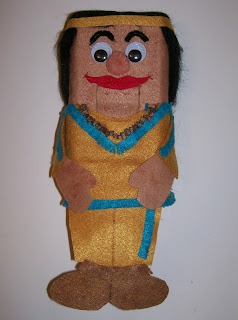

Native American Ventrilo-ett
3/6/2011
{kind=link}

You haven't seen a lot recently about my Ventrilo-ett puppets. It's not because I've not been building them; I do build to order, and enjoy doing so, knowing they are wonderfully easy and effective to use.
However, I try not to let myself get too far distracted from what I consider my true calling - that of figure maker. So when figure orders are "on the board" I don't go too far out of my way to seek other types work.
But, last week when asked by a blog reader if I could build a Native American Ventrilo-ett for use in ministry to US Native Americans, that was a cause I wanted to be a part of in my small way, and here you see the result.
* * * * *
This just in from the owner:
"Thank you for the excellent job you did in creating the Native American Ventrilo-ett. I have used it less than 48 hours after receiving it for a program for over 100 individuals. The placement of the mouth lever is perfect to be used with either hand. I used it with my left hand as I used the ventriloquist figure with my right hand. The ventrilo-etts are perfect to complement an existing routine with one's favorite figure. I'm confident it will be used wonderfully on our mission trip to the Native Americans this next week."